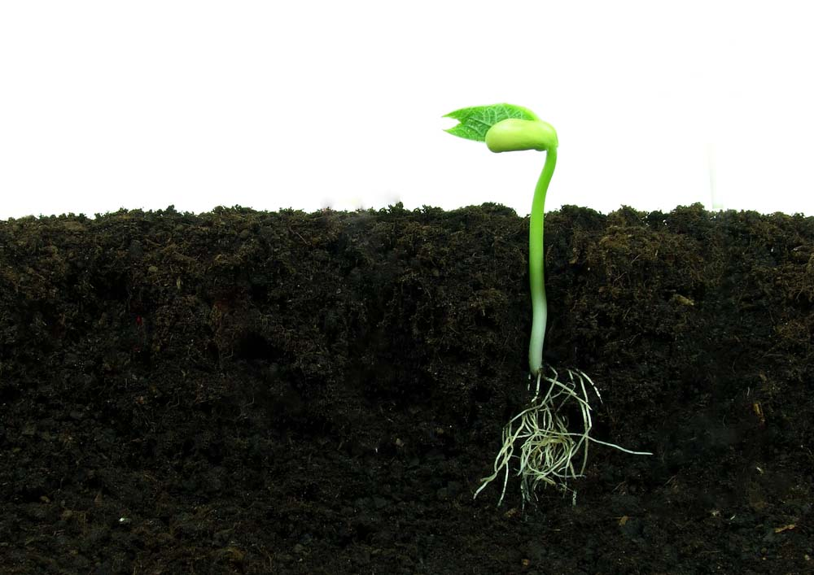
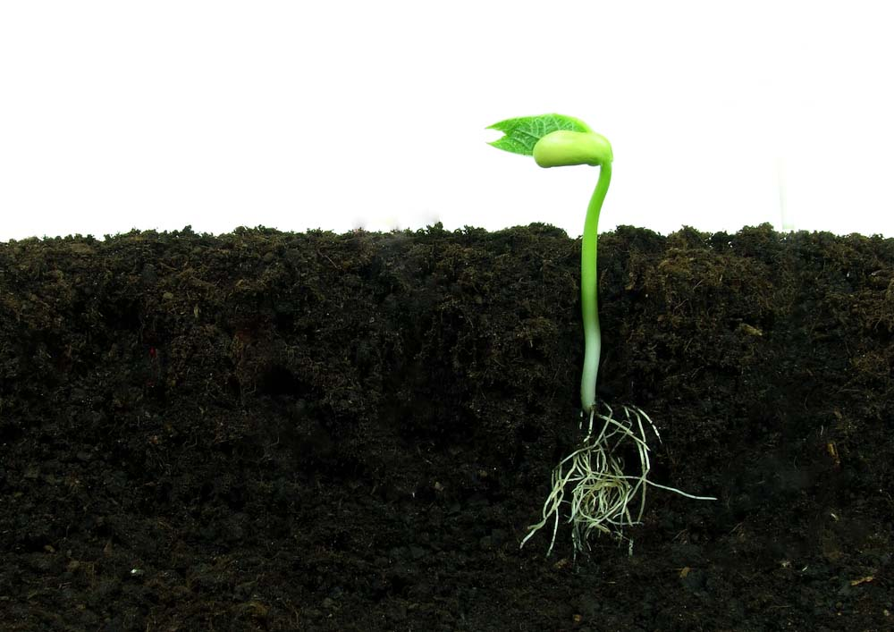
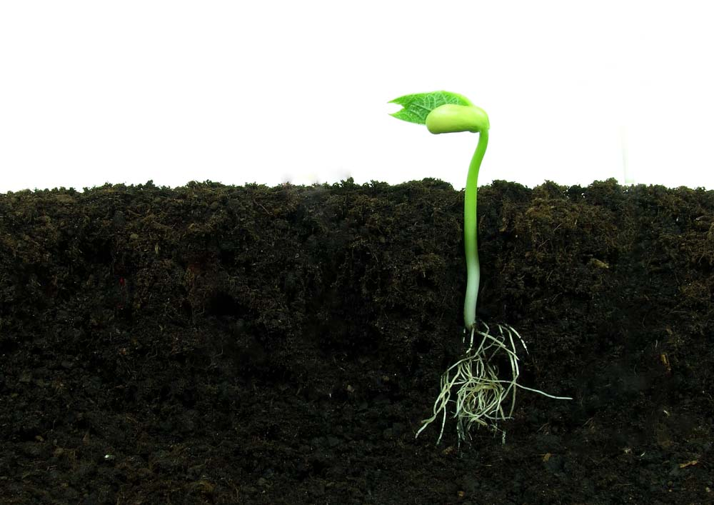
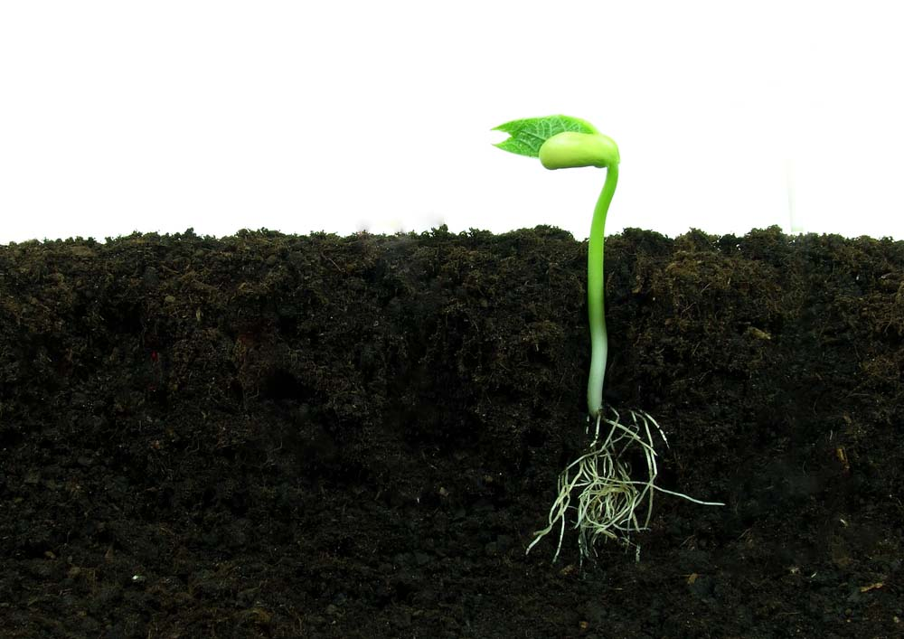

Deciding when to plant can sometimes be frustrating. If you are in a part of the world that has seasonal changes (specifically winter), you are probably restricted to the summer months for growing plants and flowers outdoors. Although, many people like to grow their flowers and plants indoors, especially during the winter months. This allows year-round gardening and planting, of course, as long as you have the space and sunlight inside your house!
Picking out your seeds can be confusing because there are several types and colors to choose from. So, before you plan to head to the store and purchase your seeds, make a plan. This plan will consist of the above information (logistics) as well as how many flowers you will grow and what assortment of colors you would like to have in your garden. Once you have developed this plan you can go to the store and buy your seeds. The alternative, and more economical idea is to find the flowers you would like to plant that has already grown elsewhere, and use those seeds to plant your new flowers.
Preparing your seeds is an easy process that usually takes about a week, depending on the temperatures inside your house. To do this you place seeds in a row on a paper towel, then fold the paper towel over the row of seeds. Once you do this, you want to moisten the paper towel so that it is completely saturated (but not dripping). Place the paper towel inside of a ziploc bag but ensure you leave a slight opening for the seeds to breath. Place the bag next to a window or area inside of your house that get sunlight for most of the day. This will allow a warm greenhouse-like environment for the seeds to begin to sprout. After about 3 days you will begin to see the seeds starting to sprout, but be patient. Continue to check and keep the paper towel moist throughout the week, but most importantly, allow the seeds to remain in the paper towel for 5-7 days. Preparing your seeds ensures a greater success of the flowers growing and maturing. (Sometimes, if seeds are placed directly in soil they can dry out and will never sprout.)
Once your seeds have sprouted they can be planted. Many flowers will have you plant the seeds about an inch or two into the soil, but this just depends on the flower type. You must also ensure the flower’s success by planting them a certain distance apart to minimize crowding and roots suffocating each other. All of this information will be located on the back of the seed packet (if you purchased them). If you used seeds from already grown flowers, the most simple thing to do in today’s technological world would be to search Google. Make sure you keep the soil moist so your flowers can grow, but remember to not over water them as this will suffocate the roots as well.
The greatest protection to ensuring the life of your flowers will be daily maintenance. This will consist of watering the flowers, maintaining correct pH of the soil, ensuring that your flowers are not over-crowding each other, pruning (if necessary), and ensuring the correct level of sunlight it receives. Maintenance of your plants will be the most important and rewarding task, while watching your seeds…grow into tall, beautiful flowers.